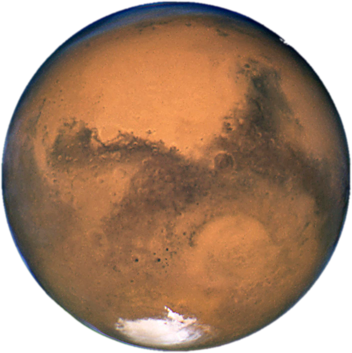

|
 | |
|
|
Earth |
Mars |
Jupiter |
Saturn |
|
| Mass (kg) | 5.98 x 1024 | 6.42 x 1023 | 1.90 x 1027 | 5.69 x 1026 |
| Diameter (km) | 12,756 | 6,787 | 142,800 | 120,660 |
| Mean density (kg/m3) | 5,520 | 3,940 | 1,314 | 690 |
| Escape velocity (m/s) | 11,200 | 5,000 | 59,500 | 35,600 |
| Average distance from the sun | 1 AU (149,597,890 km) | 1.524 AU (227,936,640 km) | 5.203 AU (778,412,020 km) | 9.537 AU (1,426,725,400 km) |
| Rotation period (length of day in Earth days) | 1 (23.93 hours) | 1.026 | 0.41 (9.8 Earth hours) | 0.44 (10.2 Earth hours) |
| Revolution period (length of year in Earth days) | 365.26 | 686.98 | (11.86 Earth years) | (29.46 Earth years) |